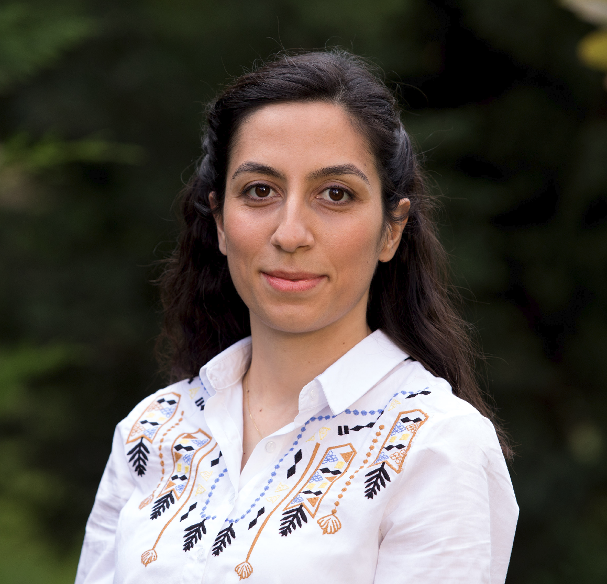
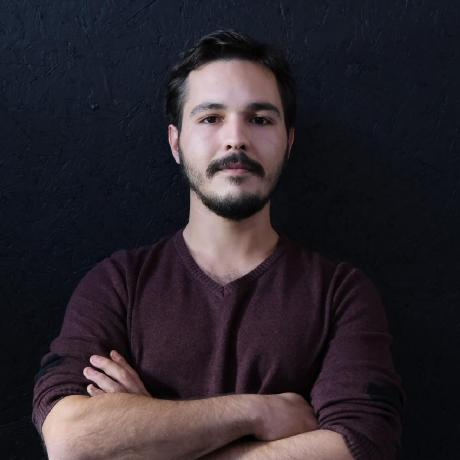

Prof. Richard Bowden
Richard Bowden received a BSc in computer science from the University of London in ’93, an MSc with distinction from the University of Leeds in ’95, and a PhD in computer vision from Brunel University in ’99 for which he was awarded the Sullivan Doctoral Thesis Prize for the best UK thesis in computer vision. An award also won by three of his PhD students (Lebeda 2017, Mendez 2018 and Spencer-Martin2021). He is Professor of Computer Vision and Machine Learning at the University of Surrey, UK, where he leads the Cognitive Vision Group within the Centre for Vision Speech and Signal Processing. He is also co-founder and Chief Scientist of the company Signapse AI

Computer vision and deep learning, with a particular focus on sign language research
Long-Context Modeling · Conditional Text Generation · Data & Memory Efficient AI · Representation Learning
3D Reconstruction · Gaussian Splatting


Sign Language Translation · Sign Language Production · NLP/CV
Join CogVis
We are actively recruiting motivated PhD students and postdoctoral researchers with interests in sign language translation, production, or LLMs for accessibility. Strong background in computer vision or NLP and prior research experience are highly valued.
Get in Touch